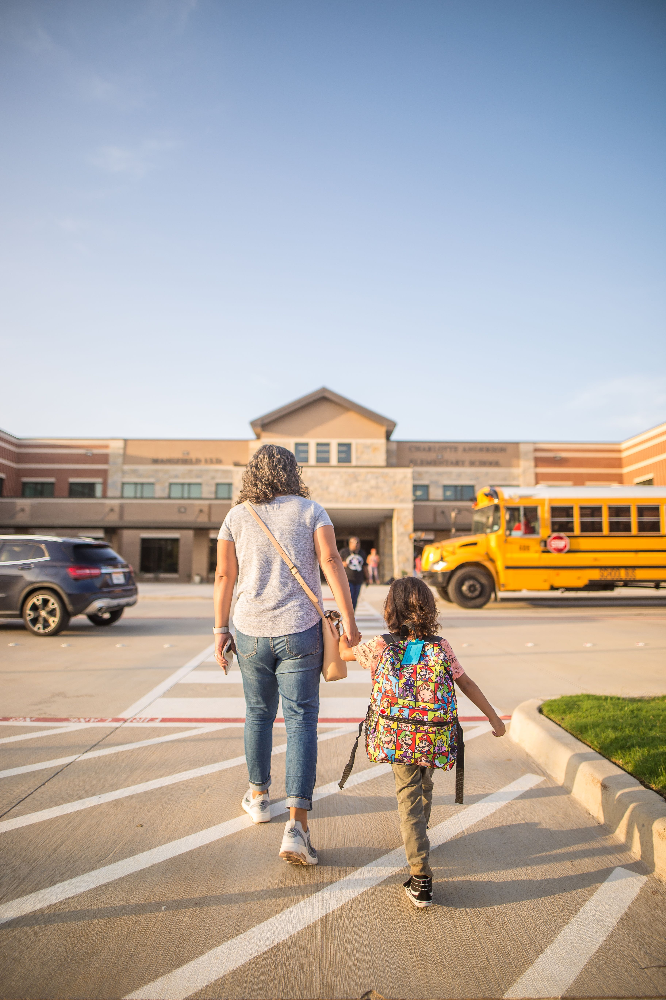

Despre EduComunicare
EduComunicare este o platformă educațională dedicată promovării comunicării asertive și dezvoltării relațiilor constructive dintre cadrul didactic și părinte, având drept scop prevenirea și diminuarea situațiilor conflictuale din mediul educațional.
Comunicarea reprezintă fundamentul unui parteneriat educațional eficient. Relația dintre cadrul didactic și părinte presupune colaborare, încredere reciprocă, respect și responsabilitate comună pentru dezvoltarea armonioasă și succesul educațional al copilului. Atunci când dialogul este deficitar, apar neînțelegeri, tensiuni și conflicte care pot afecta climatul educațional și calitatea colaborării școală–familie.
Obiective
- Promovarea comunicării asertive în mediul educațional
- Consolidarea parteneriatului dintre cadrul didactic și părinte
- Prevenirea și diminuarea situațiilor conflictuale
- Dezvoltarea ascultării active și a empatiei
- Încurajarea dialogului deschis și a exprimării respectuoase
Cui se adresează?
Platforma se adresează managerilor instituțiilor de învățământ, cadrelor didactice, diriginților, specialiștilor din domeniul educației și părinților interesați de îmbunătățirea comunicării și consolidarea relației școală–familie.

Strategii manageriale de comunicare asertivă dintre cadrele didactice și părinți în diminuarea conflictelor școlare
În cadrul relației școală–familie, un conflict poate porni de la interpretarea diferită a aceleiași situații. Un cadru didactic poate urmări respectarea regulilor clasei, în timp ce un părinte poate fi preocupat, în primul rând, de modul în care copilul său este înțeles și sprijinit. Dacă opiniile sunt exprimate prin acuzații, întreruperi sau generalizări, dialogul se poate transforma rapid într-o confruntare. Din acest motiv, proiectul acordă importanță atât felului în care este formulat mesajul, cât și disponibilității de a asculta punctul de vedere al celuilalt.
Explorează toate conceptele
Comunicare asertivă
Stil de comunicare în care persoana își exprimă clar și respectuos opiniile, nevoile și sentimentele, fără agresivitate și fără pasivitate, respectând și drepturile interlocutorului..
Citește mai mult.jpg)
Ascultare activă
Atenție reală acordată interlocutorului, prin care se clarifică și se confirmă mesajul (parafrazare, întrebări de clarificare, feedback).
Citește mai mult
Conflict școlar
D ezacord sau tensiune între actorii educaționali (cadre didactice, părinți, elevi), generat de interese, așteptări sau percepții diferite.
Citește mai mult
Parteneriat școală-familie
Parteneriat școală–familie: colaborare bazată pe încredere, responsabilitate comună și comunicare deschisă între cadrele didactice și părinți, în interesul elevului.
Citește mai mult
Strategie manageriala
Ansamblu de acțiuni planificate prin care conducerea instituției atinge un obiectiv, aici prevenirea și soluționarea conflictelor prin comunicare.
Citește mai multMediere / soluționare a conflictelor
Proces prin care părțile ajung la o soluție acceptabilă pentru ambele, cu sprijinul unei terțe persoane neutre sau al unor pași stabiliți.
Citește mai multResursă educațională digitală
Material de informare și formare în format electronic, accesibil online, aici site-ul web ca produs final.
Citește mai multDe ce contează comunicarea asertivă în relația școală–familie
-
Codul educației al Republicii Moldova nr. 152 din 17 iulie 2014
-
Codul de etică al cadrului didactic, aprobat prin Ordinul Ministerului Educației nr. 861 din 7 septembrie 2015
-
Regulamentul-cadru de organizare și funcționare a instituțiilor de învățământ primar și secundar, ciclul I și II, aprobat prin Ordinul MEC nr. 253 din 12 februarie 2026
-
Standardele de competență profesională ale cadrelor didactice, aprobate prin Ordinul MEC nr. 1657 din 22 septembrie 2025